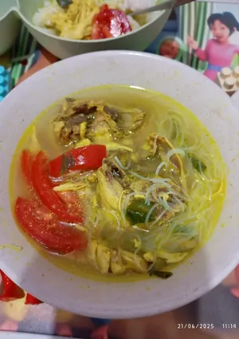

Soto Ayam
Home

Hujan-hujan emang paling enak bikin yang kuah anget. Akhirnya bikin soto ayam aja yg simpel
Bahan
- Ayam fillet seperempat
- Tulang ayam
- Soun
- Kol
- Tomat
- Daun bawang
Bumbu Halus
- Kunyit seruas jari
- Jahe
- Bawang merah
- Bawang putih
- Kemiri
- Ketumbar
Cara Membuat
- Potong tulang ayam menjadi bbrp bagian
- Haluskan bumbu lalu tumis hingga matang
- Masukan ayam dan tulang ayam ke dalam kuah soto
- Beri tambahan daun bawang lalu beri garam, gula, penyedap rasa dan lada